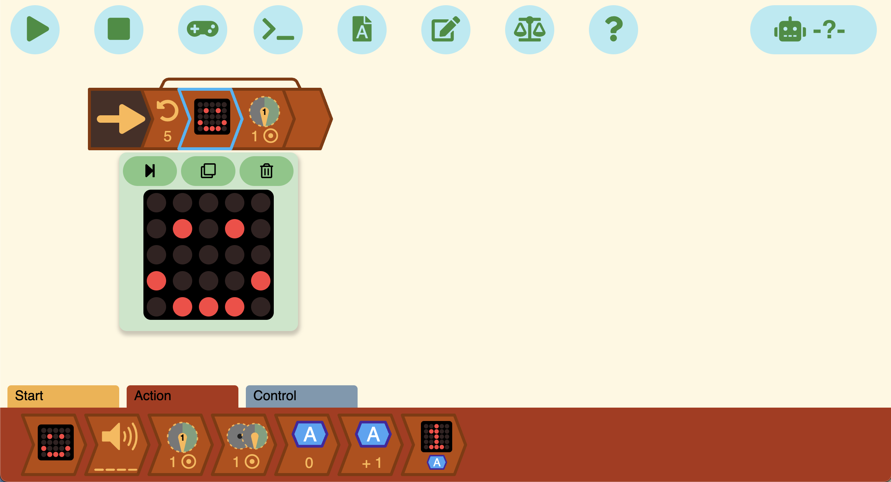
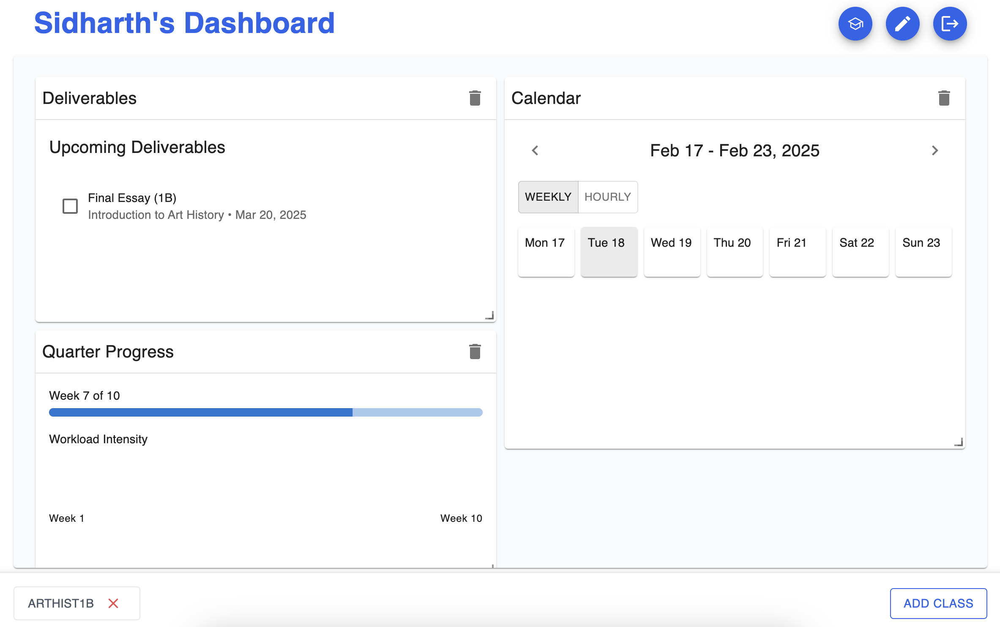
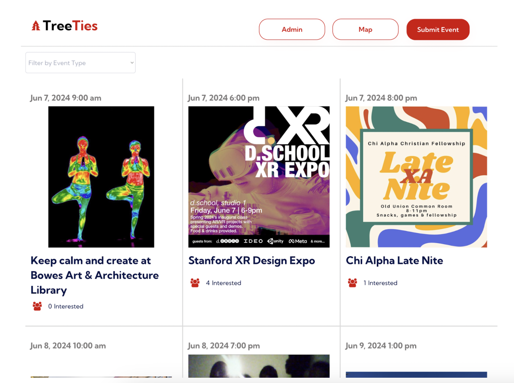

TBlocks
Block Programming App for Robots
A visual coding environment for K–12 students to program Trashbot robots using drag-and-drop blocks. Deployed across 100+ schools.
View Project →Stanford CS (AI) · PM @ Box · Co-founder, Trashbots
Building thoughtfully at the intersection of technology, entrepreneurship, and creativity. I care about products that make a real difference.
A selection of things I've built — from AI tools to a documentary film.

Block Programming App for Robots
A visual coding environment for K–12 students to program Trashbot robots using drag-and-drop blocks. Deployed across 100+ schools.
View Project →
Smart Course Management
Parses syllabi with Claude AI to automatically extract deadlines and deliverables, then builds a personalized student dashboard.
View Project →
Deep Reinforcement Learning Agent
Trained a Double Q-learning agent with epsilon-greedy exploration to master the 2048 puzzle game using a neural network policy.
View Project →
Campus Events Finder
A Stanford campus events platform combining web-scraped listings with community contributions, featuring map and feed views.
View Project →Efficient LLM Fine-Tuning
Implemented Low-Rank Adaptation (LoRA) from scratch on GPT-2, enabling parameter-efficient fine-tuning with a fraction of the compute.
View Project →Conversational Flight Booking
An AI agent that books flights through natural conversation — handles multi-leg trips, preference learning, and real-time fare lookup.
View Project →Short Documentary Film
A short documentary exploring happiness, culture, and the concept of GNH (Gross National Happiness) in Bhutan. Screened at Indie Meme Film Festival.
View Project →Trashbots educational robot system — hardware components and control architecture.
Trashbots proprietary software platform and programming interface.
Named one of the 16 Most Promising Young Entrepreneurs by Entrepreneur Magazine (2018).
Keynote at Empredil (Chile), Houston Tech Rodeo, ISTE, TCEA, and SXSWedu on edtech and entrepreneurship.
Texas All-State qualifier (3 years) and Top 3 Bass vocalist at NATS national competition.
Trashbots reached 100+ schools, bringing hands-on robotics to underserved communities nationwide.
The things that shape how I think and build.
Directed Tashi Delek, a short documentary exploring happiness and GNH culture in Bhutan. Screened at the Indie Meme Film Festival. Filmmaking taught me to see the human story inside every complex system.
Watch the film →Bass vocalist — Marie Gibson Prize recipient, three-time Texas All-State qualifier, Top 3 at NATS nationals. Performed with Stanford Raagapella and Conspirare. Music and engineering aren't that different: both are about listening carefully.
Summited Mount Kilimanjaro. Active boulderer and global traveler — taught STEM workshops internationally, performed keynotes in Chile, and explored Bhutan for the film. Best ideas come from being somewhere unfamiliar.